Scatola · S4·F5 · 57 partite
The Raptor Games57,9% di vittorie
🇪🇸 ES · 🇬🇧 EN · 🇫🇷 FR · 🇩🇪 DE · 🇮🇹 IT
📖 Guida di Raptors (killer) · Guida di Isla Lagarto (luogo)
Raptors su Isla Lagarto. Su 57 partite registrate si vince nel 57,9% dei casi, 7,4 punti sotto la media del gioco (65,3%).
Campione ridotto
Solo 57 partite registrate. Divise tra Dark Powers, Finali e Setup, ogni dettaglio ne conta pochissime: prendilo come un indizio, non come un fatto.
Cosa la rende particolare
La salute del branco è il numero di raptor, senza limite massimo. I raptor sciolti si fermano sulle vittime invece di attaccarle. Il T-Rex non può essere ucciso, si muove di 2 per round e mangia in un ordine fisso: vittime, raptor, Final Girl, killer. Tre recinzioni elettriche bloccano movimento e linea di vista; un tiro di dado nell'Upkeep decide quali sono attive. Salvare costa 1 tempo extra. Dati preliminari: la scatola è molto recente e c'è poca esperienza.
| Livello | Avanzato |
| La mappa | Recinzioni elettriche, eruzione vulcanica |
Il killer
Raptors ha il 65,6% di vittorie su tutte le mappe, su 90 partite. Qui, su Isla Lagarto, la cifra è 57,9%.
Dark Powers
| Dark Power | Vittorie | Partite |
|---|---|---|
| Pack Conditioning | 50,0% | 22 |
| Blood Thirsty | 66,7% | 21 |
| They're Everywhere! | 78,3% | 23 |
Dove trovarla
Link di affiliazione: se compri, ricevo una piccola commissione senza costi in più per te. Non cambia quello che dicono i dati sopra.
Come iniziare la partita
Le quattro aperture, con quale usare in base alla preparazione, sono nelle strategie di apertura.
📖 Guida di Raptors (killer)
Va bene con qualsiasi luogo. ↑ su
⌛ = Tempo · ✴ = danno · 🩸 = Bloodlust · 💔 = perdi salute · ❤️ = recuperi salute · 🔧 = spazio con l'icona della chiave inglese arancione
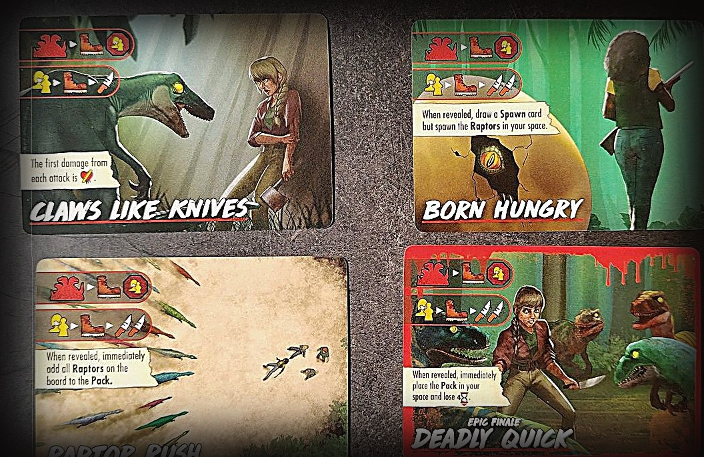
Attenzione
- Il Pack conta come il Killer a tutti gli effetti; i singoli Raptor sono Scagnozzi. Una carta che dice "Raptor(s)" non include il Pack; una che dice "Pack" non include i singoli Raptor.
- Vinci quando il Pack viene eliminato, anche se sul tabellone restano singoli Raptor.
- Un Raptor che compare durante la fase del Killer non si attiva fino alla fase del Killer successiva.
- I singoli Raptor si fermano quando entrano (o iniziano a muoversi) in uno spazio con te o una Vittima. Le carte Terrore del luogo non mostrano quell'icona, ma la regola vale comunque.
Preparazione speciale
- Mescola le carte Spawn a faccia in giù accanto alla carta Raptors e metti i meeple dei Raptor su quella carta.
- Il Pack inizia sullo spazio del Killer (K) della carta di preparazione, al posto del meeple del Killer della scatola base.
Il Pack
- Un grande gruppo di Raptor che conta come il Killer a tutti gli effetti.
- La sua salute è il numero di Raptor che lo compongono: parte da 5 (1 Final Health e 4 salute) senza limite massimo.
- Il Valore d'Attacco sulla plancia del Killer è quanto infligge il Pack per attacco, qualunque sia la sua dimensione.
Singoli Raptor
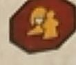
- I meeple dei Raptor. Sono Scagnozzi a tutti gli effetti.
- Hanno 1 salute e usano il Valore di Movimento della plancia del Killer.
- Non attaccano spesso, ma quando lo fanno ognuno infligge 1 ✴.
Unirsi al Pack
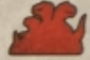
- Con l'icona del Pack, i Raptor vanno verso il Pack per il percorso più breve. Se ce ne sono diversi equivalenti, prendono quello che li porta più vicino al Pack prima di fermarsi.
- Un Raptor nello spazio del Pack si unisce subito: rimuovi il meeple e aggiungi 1 salute al Pack per ognuno.
- I meeple rimossi dal tabellone tornano sulla carta Raptors per le comparse future.
Comparsa dei Raptor
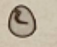
- Con l'icona della comparsa, pesca una carta Spawn e fai comparire altrettanti Raptor. Lo spazio si decide con un tiro di dado sulla tabella della carta Raptors; se più spazi sono validi, scegli tu.
- Non compaiono mai in spazi non più accessibili.
- Se i meeple non bastano, il Raptor più vicino al Pack si unisce al Pack e usi il suo meeple; ripeti finché la carta non è risolta.
- Se il mazzo Spawn si esaurisce, mescola gli scarti e pesca.
- Anche l'effetto finale sul tracciato 🩸 fa comparire un Raptor, come una carta Spawn da 1.
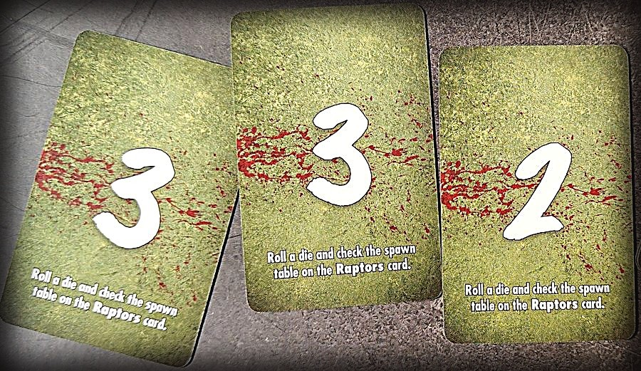
La tabella di comparsa (carta Raptors)
- Tira un dado per vedere dove compaiono: 1 il tuo spazio · 2 lo spazio verde (uscita) più vicino al Pack · 3 lo spazio 🔧 più vicino al Pack · 4 lo spazio verde più lontano dal Pack · 5 lo spazio 🔧 più lontano dal Pack · 6 lo spazio più lontano da te.
- Ogni Raptor sciolto: 1 ❤️, un attacco da 1 ✴ e movimento pari a quello del Pack. Non si muovono se iniziano con te o con una Vittima, e si fermano entrando in uno spazio con te o con una Vittima.
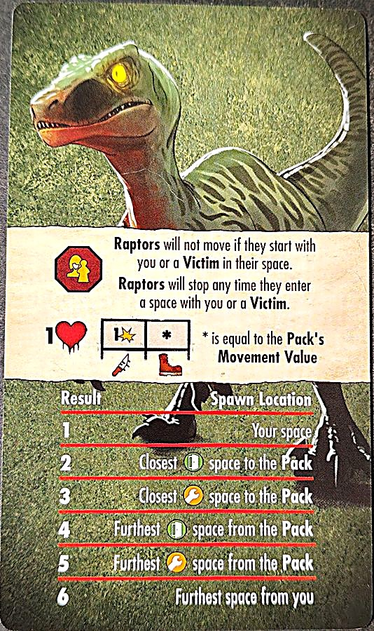
Come leggere le loro carte
- La sagoma rossa di più Raptor = l'icona del Pack: i Raptor sciolti vanno verso di essa per unirsi. Le figure gialle = bersaglio tu o la Vittima più vicina. Lo stivale = movimento. Il coltello = attacco (uno per coltello). Il segnale di stop con le figure = si ferma quando raggiunge te o una Vittima. L'uovo rotto = compaiono Raptor.
- "Pack only" è solo il Pack; "Raptors only", solo quelli sciolti.
Finali
- Hanno tutti due righe: sopra, i Raptor sciolti si muovono verso il Pack e si fermano se raggiungono te o una Vittima; sotto, il Pack prende come bersaglio te o la Vittima più vicina, si muove e attacca.
- Claws Like Knives: il Pack attacca una volta. Il primo danno di ogni attacco è 💔: perdi salute direttamente.
- Born Hungry: il Pack attacca due volte. Quando viene rivelato, pesca una carta Spawn ma fai comparire i Raptor nel tuo spazio.
- Raptor Rush: il Pack attacca 3 volte. Quando viene rivelato, tutti i Raptor sul tabellone si uniscono al Pack.
- Deadly Quick (Finale Epico): il Pack attacca due volte. Quando viene rivelato, metti il Pack nel tuo spazio e perdi 4 ⌛.
Poteri Oscuri
- Pack Conditioning: ogni volta che un Raptor è adiacente al Pack, aggiungilo al Pack.
- They're Everywhere!: quando peschi carte Spawn, pescane 2 e fai comparire il valore più alto. Poi scartale entrambe.
- Blood Thirsty: ogni volta che il Pack uccide una Vittima, ottiene ❤️.
- Scaly Hide (Potere Oscuro Epico): il Pack e i Raptor ignorano tutti i danni delle carte Reazione.
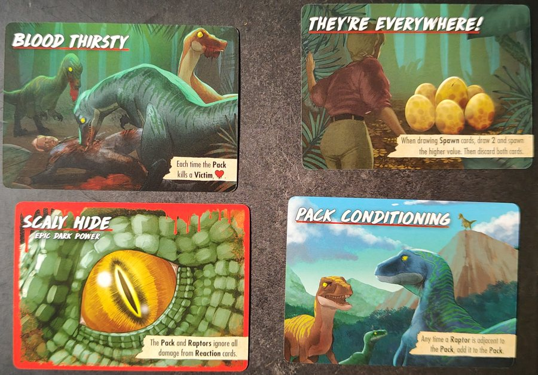
Carte Terrore da spiegare
- Protect the Brood (2 copie): compaiono Raptor (uovo) e metti il Pack dove sono comparsi. Se la carta Spawn era uno 0, tira un dado e piazza il Pack con la tabella della carta Raptors. Poi il Pack prende come bersaglio te o una Vittima, si muove e attacca.
- Share the Feast: il Pack sceglie il bersaglio, si muove e attacca; i Raptor sciolti si muovono verso il Pack (fermandosi su di te o su una Vittima). Se qualcuno si è unito al Pack, il Pack attacca di nuovo.
- No Escape: se non ci sono Raptor sul tabellone, scartala e pesca la carta Terrore successiva. Altrimenti, il Raptor più vicino a ogni spazio verde (uscita) viene piazzato lì, e quelli sulle uscite attaccano. Se nessuno è stato attaccato, 🎭🎭.
- Predatory Instincts (Potere Oscuro Minore): il Pack infligge 1 ✴ in più per coltello.
- Survival Instincts (Potere Oscuro Minore): a ogni Mantenimento il Pack ottiene ❤️.
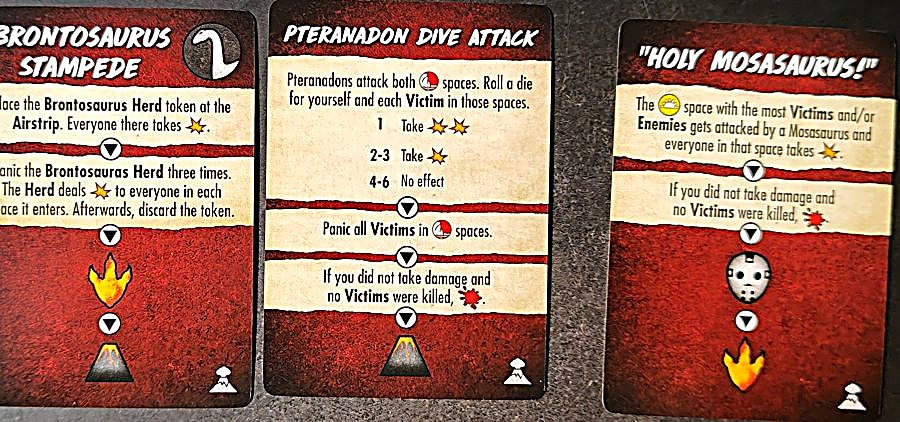
📖 Guida di Isla Lagarto (luogo)
Va bene con qualsiasi killer. ↑ su
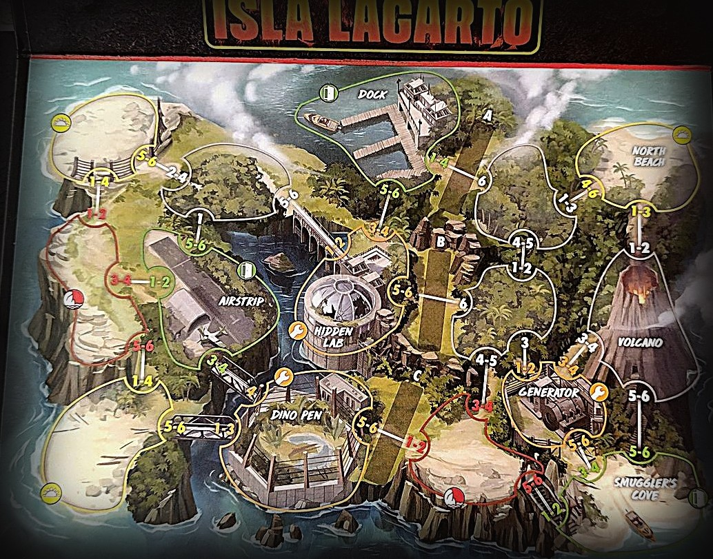
Attenzione
- Gli spazi di Lava non sono più accessibili a nessuno, Raptor e T-Rex compresi.
- Se Game Makers viene pescato durante la preparazione, scartalo e pescane un altro.
Preparazione speciale
- Metti gli indicatori Electric Fence nelle sezioni verdi indicate sulla carta di preparazione. In quelle rosse non va niente.
- Mescola le 3 carte Lava a faccia in giù e metti accanto i segnalini Lava.
- Metti la carta T-Rex vicino all'area di gioco e il suo meeple sullo spazio iniziale della carta.
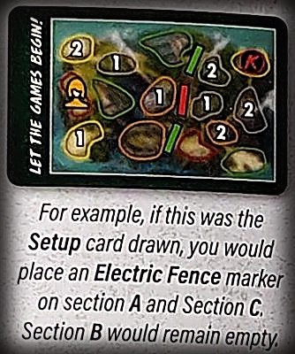
Recinzioni elettriche
- Ci sono 3 recinzioni: A, B e C. Finché c'è un indicatore, il passaggio è bloccato e gli spazi ai due lati non sono adiacenti.
- Panico: chi va nel panico verso una recinzione bloccata resta dov'è.
- Più lontano / più vicino: conta solo i percorsi non bloccati. Se tutti e 3 gli indicatori sono piazzati e l'unico spazio o bersaglio è dall'altra parte, conta come se non ci fossero recinzioni.
- Bersaglio dei Nemici: senza un percorso libero verso il bersaglio, il Nemico non si muove per quell'azione, ma le sue icone d'attacco si risolvono comunque nel suo spazio.
- Piazzare qualcuno: le recinzioni non influiscono sugli effetti che piazzano qualcuno.
- A ogni Mantenimento, tira il dado delle recinzioni: se quella recinzione ha un indicatore, rimuovilo; altrimenti, piazzane uno.
Il T-Rex
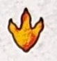
- Inizia rinchiuso nel Dino Pen. Con la sua icona (l'impronta), sposta il suo meeple di uno spazio a destra sulla carta T-Rex.
- Con "Break out!", metti il suo meeple nel Dino Pen sul tabellone e il suo segnalino azione sotto l'Azione del Killer sulla carta Finale. Da quel momento, ignora la sua icona.
- Non è né un Killer né uno Scagnozzo: non può essere attaccato, danneggiato o ucciso. La sua azione si risolve dopo le Azioni degli Scagnozzi e del Killer del Finale.
- Le Vittime non ti seguono nel suo spazio (a meno che un effetto non permetta loro di seguirti in quello del Killer). Nella fase Panico, tutti quelli nel suo spazio vanno nel panico, che qualcuno sia morto o no in quel turno.
- Movimento 2, con l'icona ANY: si ferma appena raggiunge uno spazio con chiunque (te, Vittime, Nemici...), e non si muove se nel suo spazio c'è già qualcuno.
- Non infligge danni: uccide un bersaglio nel suo spazio. Priorità: Vittima, Scagnozzo, tu, Killer. Se attacca te o il Killer, muori all'istante, senza rivelare il Final Health.
- Contro un Nemico composto da più unità (il Pack dei Raptor, un'orda di zombi...) uccide una unità, cioè 1 danno.
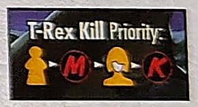
Il vulcano
- La prima volta che risolvi l'icona del vulcano, erutta: tutti quelli sul Volcano subiscono 💔, chi resta nello spazio va nel panico e metti lì il segnalino Lava del Volcano: non è più accessibile.
- Dopo, la lava si espande in uno spazio adiacente: pesca una carta Lava per vedere quale e seguila.
- Quando tutti i 4 segnalini Lava sono sul tabellone, ignora l'icona del vulcano.
- Le 3 carte Lava: North Beach, Generator e Smuggler's Cove. Tutti quelli lì subiscono 💔, chi resta va nel panico finché non lascia lo spazio, e metti il suo segnalino Lava.
Spazi speciali
- I 3 spazi d'angolo con l'icona della spiaggia sono spazi Beach.
- I 2 spazi sul bordo con l'icona della scogliera sono spazi Cliff.
- Diverse carte luogo vi fanno riferimento.
Preparazioni
K = partenza del Killer · figura gialla = la Final Girl · numeri = Vittime per spazio.


Oggetti

Arma · gittata 0-1 · 3 ✴ · 2 mani · 2 usi. Dividi i danni: metà (per eccesso) a un Nemico nel tuo spazio e metà (per difetto) a uno in uno spazio adiacente. I danni a uno spazio senza Nemici vanno persi.

Arma · gittata 0-1 · 1 ✴ · 1 mano. Se la usi a gittata 1, scartala.

Arma · gittata 0 · 1 ✴ · 1 mano.

Arma · gittata 0 · 1 ✴ · 1 mano · 3 usi. Usala per attaccare o per ignorare 1 ✴ di un attacco nemico.

1 mano · 2 usi. In qualsiasi momento, infliggi 1 ✴ a un Nemico in uno spazio adiacente; se si stava muovendo, il suo movimento termina.

2 mani. Scartala quando vieni attaccato da un Nemico per ignorare quell'attacco e ogni attacco di quel Nemico per il resto del turno.

Una volta per fase Azione, spendi 1 ⌛: tutte le Vittime adiacenti si spostano nel tuo spazio, poi tutti i Nemici ti prendono come bersaglio e si muovono. Finché ce l'hai, ti segue una Vittima in più.

Scarta per piazzare il Goat nel tuo spazio o in uno adiacente. Nemici e T-Rex prendono sempre come bersaglio il Goat finché non viene ucciso. Ha 1 ❤️ e non si muove.

4 usi. Metti il segnalino Rover nel tuo spazio; si muove con te. Con il Rover, fino a 3 Vittime possono seguirti e puoi spendere un uso per muoverti di 1 spazio. Finiti gli usi, è senza benzina: scarta la carta e il Rover.

Quando salvi almeno una Vittima all'Airstrip, puoi scartarlo per salvare subito un'altra Vittima da qualsiasi spazio.

Puoi ignorare tutte le icone 💔 sulle carte Azione Walk e Sprint.

Scarta per aggiungere o rimuovere qualsiasi indicatore electric fence.

Arma · gittata 1-2 · 2 mani · 2 usi. Non può modificare una carta Azione e va usata senza. Una volta per turno, spendi ⌛ per fare un Tiro Orrore. Con un successo: 2 ✴ a 1 Nemico entro gittata.

1 mano · 3 usi. Sposta un Nemico nel tuo spazio in uno spazio adiacente.

Se è a faccia in su su un mazzo Oggetti, puoi prenderlo gratis mentre sei nel suo spazio 🔧. Scarta per recuperare ❤️❤️❤️.

Quando lo prendi, scartalo e scegli: ciò che mostrano le sue icone, o la prima carta di un qualsiasi mazzo Oggetti.
Eventi di Isla Lagarto
- Supply Drop
- Metti i 3 segnalini Supply sugli spazi Beach e Cliff più lontani da te (uno ciascuno). In uno spazio con un segnalino puoi spendere 2 ⌛ per rimuoverlo e prendere un Oggetto a caso tra quelli messi da parte nella preparazione. Scarta quando non restano segnalini.
- Fierce Competitors
- Per ogni Vittima che salvi: ⌛.
- Terrified Child
- La Vittima più lontana da te è il Terrified Child. Finché restano altre Vittime, non ti segue e non può essere salvato, preso come bersaglio o ucciso. Salvato: sblocca la tua Abilità Suprema o riduci l'Orrore a 0. Ucciso: 🩸 al massimo.
- Game Makers
- Se pescato durante la preparazione, scartalo e pescane un altro. Altrimenti risolvi le sue tre icone (vulcano, un nuovo Evento e l'artiglio arancione) e scartalo.
- The Alpha
- La Vittima più vicina a te è l'Alpha. Se ucciso: 🩸. Quando qualcuno con l'Alpha o accanto a lui sta per essere attaccato (non i Nemici), l'Alpha si sposta nel suo spazio e tiri: 1-2 l'Alpha muore · 3-4 l'attacco prosegue · 5-6 viene annullato.
- The Power Is Down
- Rimuovi tutti gli indicatori delle recinzioni elettriche e risolvi l'artiglio arancione una volta. Non tirare il dado delle recinzioni nel prossimo Mantenimento. Scarta alla fine di quel Mantenimento.
- Power Surge
- Piazza tutti gli indicatori delle recinzioni elettriche. Non tirare il loro dado nel prossimo Mantenimento. Scarta alla fine di quel Mantenimento.
- Tropical Storm
- Nella prossima fase Azione, tira un dado in meno (minimo 1) in ogni Tiro Orrore. Se non fai nessun Tiro Orrore: 3 ⌛. Scarta alla fine di quella fase.
- Herbal Remedies
- Prendi una Vittima uccisa a tua scelta e mettila nel tuo spazio. Scarta.
- The Hunter
- Metti l'Hunter nello spazio più lontano da te. A ogni Mantenimento, l'Hunter va nel panico e infligge ✴ a tutti nel suo spazio.
Testo nostro, dal regolamento, dalle carte e dalla wiki. Nomi delle carte in inglese. Un errore? Faccelo sapere.